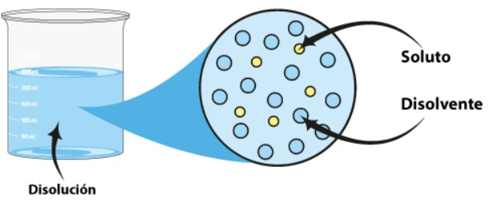

DISOLUCIONES

El término disolución (o solución) se utiliza en química para describir un sistema en el que una o más sustancias se mezclan homogéneamente o se disuelven en otra sustancia. Una disolución simple tiene dos componentes: un soluto y un disolvente. El soluto es el componente que se disuelve o es el componente menos abundante en la disolución. El disolvente es el agente de disolución o el componente más abundante en la disolución. Por ejemplo, cuando la sal se disuelve en agua para formar una disolución, la sal es el soluto y el agua es el disolvente. Las disoluciones complejas que contienen más de un soluto y/o más de un disolvente son comunes.
Objetivos del tutorial
- Comprender las características fundamentales de las disoluciones, incluyendo la distinción entre solutos y solventes, y las propiedades físicas y químicas que definen a las disoluciones.
- Analizar los factores que afectan la solubilidad de diferentes sustancias, como la temperatura, la presión y la naturaleza del soluto y el solvente, y aplicar estos conceptos para predecir la solubilidad en diversas condiciones.
- Evaluar los factores que influyen en la velocidad de disolución de los sólidos, incluyendo el tamaño de las partículas, la agitación y la temperatura, y utilizar estos conocimientos para optimizar procesos de disolución.
- Calcular la concentración de las disoluciones en diferentes unidades (molaridad, molalidad, porcentaje en masa, etc.) y aplicar estos cálculos en contextos prácticos y experimentales.
- Entender las propiedades coligativas (como la disminución del punto de congelación, la elevación del punto de ebullición, la presión de vapor y la presión osmótica) y su dependencia de la concentración del soluto, aplicando estos conceptos en problemas y experimentos.
- Explicar el fenómeno de la ósmosis y la presión osmótica, describiendo su importancia en sistemas biológicos y químicos, y realizar cálculos relacionados con la presión osmótica en diferentes disoluciones.
- Propiedades generales de las disoluciones
- Solubilidad
- Velocidad de disolución de los sólidos
- Concentración de las disoluciones
- Propiedades coligativas de las disoluciones
- Ósmosis y presión osmótica